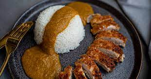

Chicken Katsu

Description
Chicken Katsu - Japanese style fried chicken. This recipe can also be used to make Tonkatsu,
just use pork cutlets instead of chicken. Serve with white rice and Tonkatsu sauce.
Prep: 10 mins
Cook: 10 mins
Total: 20 mins
Servings: 4
Ingredients
- 4 skinless, boneless chicken breast halves - pounded to 1/2 inch thickness
- salt and pepper to taste
- 2 tbs all-purpose flour
- 1 egg, beaten
- 1 cup panko bread crumbs
- 1 cup oil for frying, or as needed
Instructions
Step 1
- Season the chicken breasts on both sides with salt and pepper.
- Place the flour, egg, and panko crumbs into separate shallow dishes.
- Coat the chicken breasts in flower, shaking off any excess.
- Dip them into the egg, and then press into the panko crumbs until well coated on both sides
Step 2
- Heat 1/4 inch of oil in a large skillet over medium-high heat.
- Place chicken in the hot oil, and cook 3 or 4 mins per side, or until golden brown.